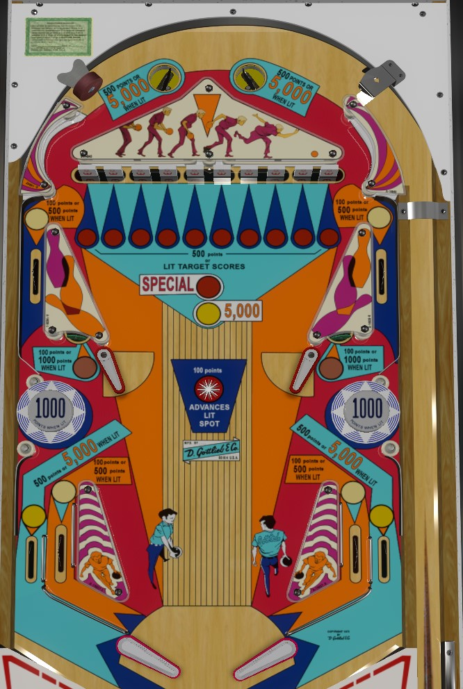

King Pin is the replay version. Pin Up is the add-a-ball version produced for domestic distribution in the USA. Ten-Up is the add-a-ball version produced for export to Italy. This guide focuses primarily on King Pin. Rules changes present in the add-a-ball versions are addressed at the end of the guide.
Plunge to whichever top saucer is lit, then shoot drop targets. The center drop targets are best shot with upper flippers to prevent rebound SDTM drains. Targets score 500 points each. Clear the 10-bank once to light one target for 5,000 points; rotate the lit target with the center star rollover. Clear the 10-bank a second time and the lit target will also score a special in addition to the 5,000 points.
The below picture is of King Pin, which was taken from the VPX recreation by Loserman76.
Drop targets score 500 points each. If two adjacent drop targets are hit, or if additional drop targets are hit before the game finishes counting up the 500 points for a previous drop target, their 500 points may not be scored due to how the score motors work in EM games. After completing the 10-bank once, it will reset, score 5,000 points, and light one target. The lit target can be moved by activating the star rollover button in the center of the playfield or by hitting 10-point slingshots until a 100-point threshold is crossed in your score. Hitting the lit target scores 5,000 points instead of 500. Completing the 10-bank once also lights the upper side lanes, the in lanes and the standup targets underneath the lower flippers for 500 points instead of 100. If the entire 10-bank is completed a second time during the game, the lit target will be worth a special in addition to the 5,000 points.
A ball coming down from the top of the table should roll neatly down the slingshots toward the upper flippers, without triggering the slingshots near to the upper flippers- though some copies of the game with extra-sensitive rubbers, as well as the VPX version, may fire the slingshots when this happens. Don't simply hold the upper flippers up when the ball is coming from the top of the table, as their angle is liable to deflect the ball directly into the opposite out lane.
Definitely the center 2 drop targets, and maybe even the center 4 drop targets, are best shot from an upper flipper to prevent SDTM drains on the return trip. If you decide to try to backhand a drop target from a lower flipper, be sure to let go of the flipper button as soon as possible so that the raised upper flipper doesn't block the shot you are trying to make.
In addition to the lit drop target, the top saucers and out lanes are lit alternately, changing whenever exactly 100 points are scored. These features score 500 points, or 5,000 when lit.
King Pin has a conventional in/out lane setup. Slingshots score 10 points. In lanes score 100 points, or 500 when lit after completing the 1-10 targets once. Out lanes score 500 points, or 5,000 when lit, and are lit alternately.
There is no end of ball bonus. Drop target progress does carry over from ball to ball; only clearing the full bank resets the targets. Lit 5,000 spots or Specials at the drop targets also stay for the rest of the game. Tilt ends game.
On Pin Up and Ten-Up, drop targets score 1,000 points instead of 500. Clearing the entire bank of targets scores 1 extra ball and activates Wow Mode for the rest of the ball only. During Wow Mode, one target is lit for extra ball, and the upper side lanes and standup targets near the upper flippers are intermittently lit for extra ball as well. Multiple extra balls can be earned during a single Wow Mode, with the game being able to hold up to 10 balls remaining at any one time. If the ball drains while Wow Mode is running, all lit extra balls will unlight, and the entire drop target bank needs to be cleared again to earn the possibility of additional extra balls.
In lanes operate under the same alternating rules as out lanes, being worth 500 or 5,000 when lit. Either the left in lane and right out lane will be lit, or vice versa. Tilt penalty is ball in play, plus one additional ball.